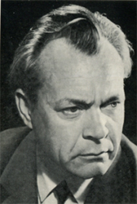

Об авторе
Дроздов Иван Владимирович родился 25 мая 1924 (по паспортным данным 1922 года) в деревне Слепцовка (позже переименованной в Ананьево) Пензенской области в крестьянской семье.

В 1932 году И.В. Дроздов вместе с братом и сестрой уехал в Сталинград на заработки. В голодны1933 год. Оказался на улице среди беспризорников. Четыре года бродяжничал, а в 1937 году поступил в Сталинградский тракторный завод учеником механосборочного цеха. С 1939 года уже работал мастером. Одновременно учился в вечерней школе рабочей молодежи.
В 60-х, после знакомства с акад. Ф. Угловым,
Иван Дроздов начинает борьбу против алкоголизма.
В 90-е Иван Дроздов переезжает из Москвы на постоянное место жительства в Санкт-Петербург.
Иван Дроздов рисует характеры и поступки, которые обличают евреев, высвечивают их суть изнутри, делают их узнаваемыми.
В настоящее время, И.В. продолжает свою творческую и общественную деятельность.
 © 2016 Иван Дроздов, русский писатель
© 2016 Иван Дроздов, русский писатель